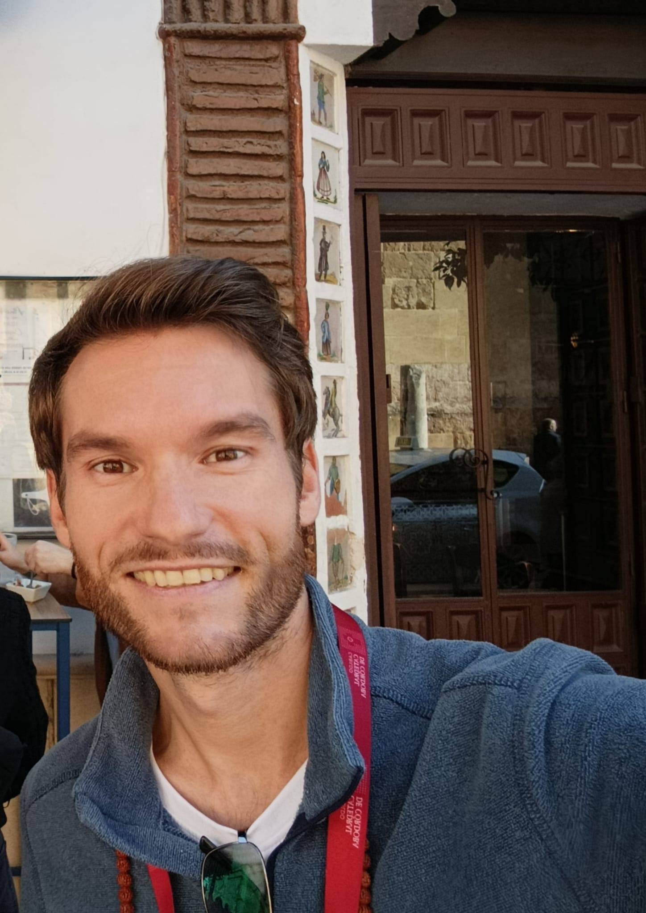

.JPG)
Guía Oficial de Andalucía
Córdoba,
Córdoba,
contigo.
Tours privados exclusivos. Tú decides el ritmo, el idioma y los lugares. Ricardo hace el resto.
Tours privados exclusivos. Tú decides el ritmo, el idioma y los lugares. Ricardo hace el resto.
Tours Privados
Todos los tours son privados. Toca la foto de cada tour para ver más imágenes e información.
 Más solicitado
Más solicitado1 hora · UNESCO
Entras y no puedes creer lo que ves. Cientos de columnas, arcos bicolores y una catedral dentro de una mezquita.


 UNESCO
UNESCO1 hora · Sinagoga incluida
Callejuelas blancas y una sinagoga del siglo XIV que parece detenida en el tiempo.


 Ideal familias
Ideal familias1 hora
Jardines, estanques y mosaicos romanos. Donde Colón convenció a los Reyes Católicos.
 Siglo I a.C.
Siglo I a.C.2 horas
El Puente Romano y los vestigios de la Córdoba antes del Islam.
Más recomendado3 horas · 3 monumentos
Mezquita, Judería y Alcázar en un solo recorrido. Sin carreras y sin grupos.
 UNESCO 2018
UNESCO 20183 horas
Un palacio enterrado durante siglos, a 8 km de Córdoba.

%20-%20Medina%20Azahara.jpg)
.jpg)
 Muy popular
Muy popular2 horas
Tres o cuatro tabernas del centro. Salmorejo, flamenquín y vinos de Montilla-Moriles.
 Primera visita
Primera visita2 horas
Puente Romano, Calleja de las Flores, casco histórico.
UNESCO Inmaterial1-2 horas
Cada patio es una sorpresa, cuidado como su obra de arte.
Duración y precio a consultar
Palacio de Viana, Museo Arqueológico o lo que quieras.
Resultados
Patrimonio de la Humanidad
Cómo funciona
WhatsApp o formulario. Respuesta en 24h.
Tour, fecha, idioma, personas.
Tarjeta, transferencia o en persona.
Córdoba es tuya.

Ricardo, junto a la estatua de Maimónides

Ricardo, guiando en el casco histórico
Tu guía
Nací en Córdoba. Crecí en Toulouse, Francia. Viví en Canadá y Brasil. Volví a la ciudad que me vio nacer.
Llevo más de diez años haciendo tours privados. No tengo un script fijo: me adapto a lo que te interesa. Puedo ayudarte también con transporte y restaurantes.
Contacto
Escribe por WhatsApp o rellena el formulario.